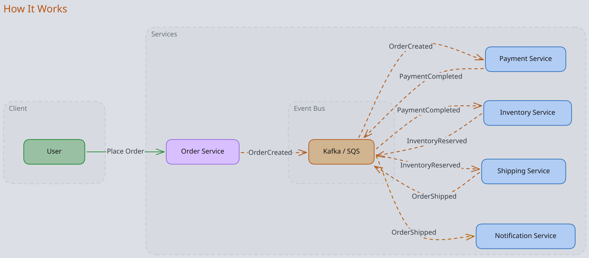
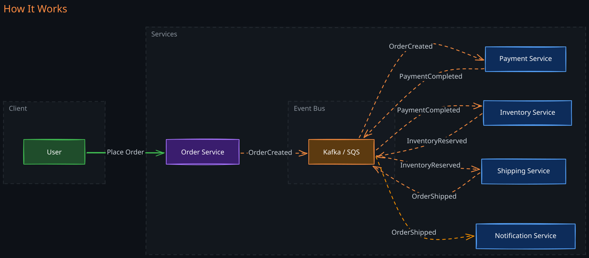
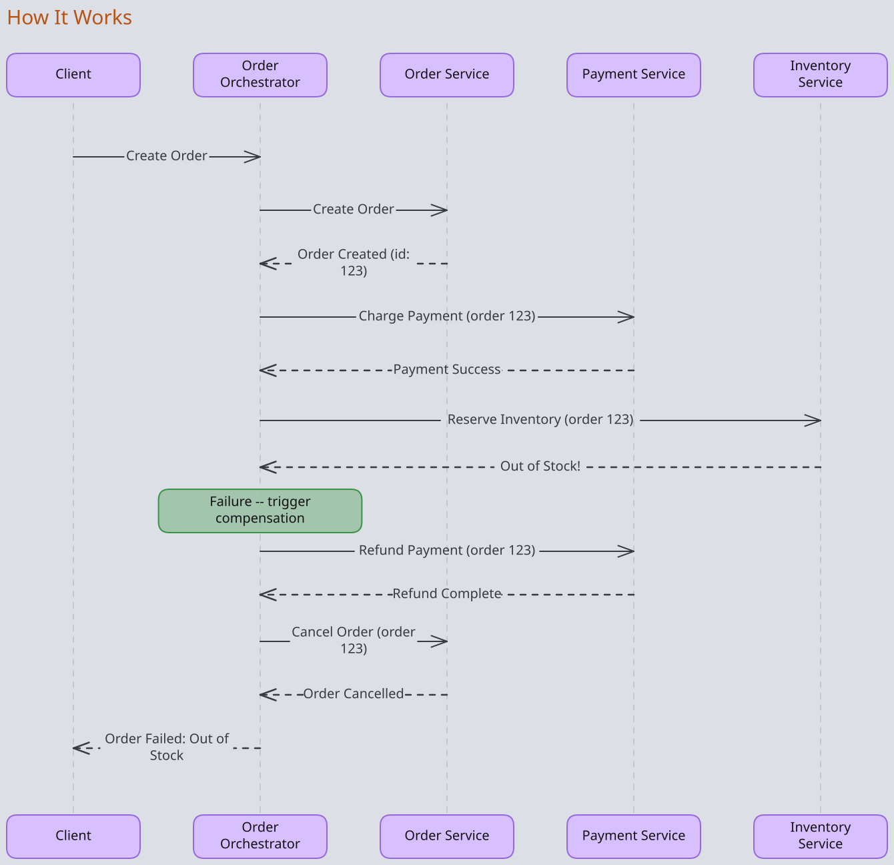
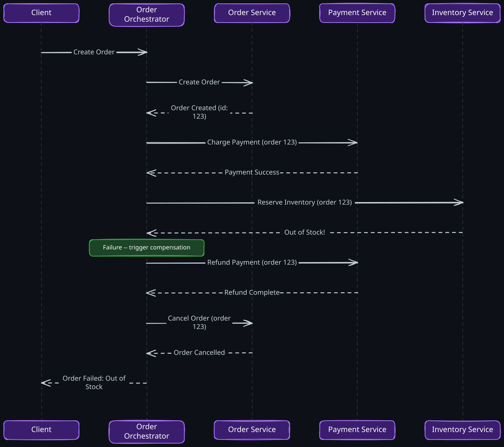
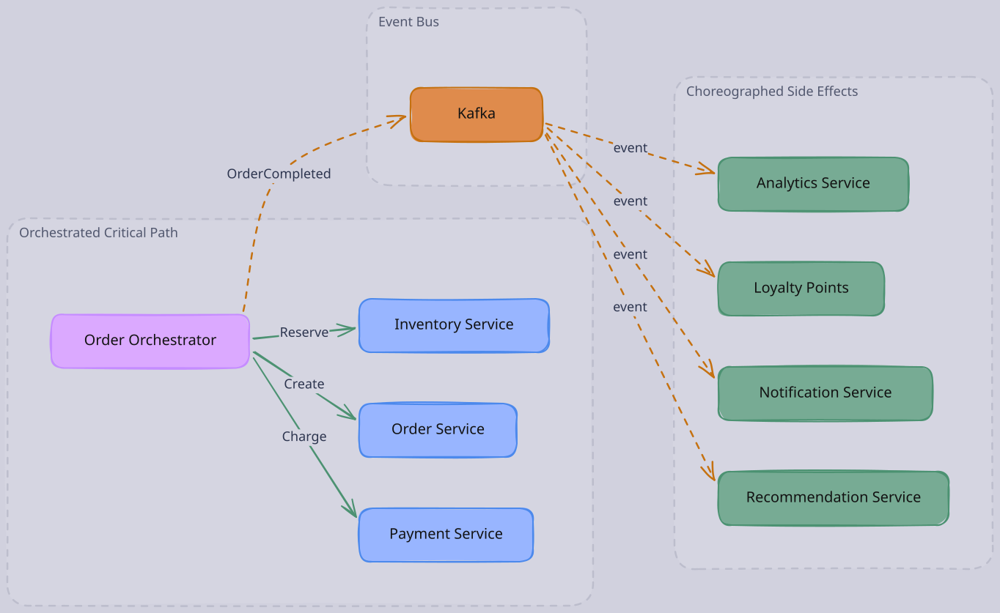
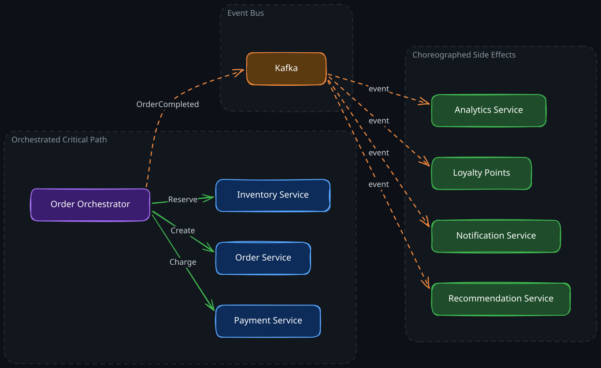

The Story
Netflix moved from orchestration to choreography for many of its workflows, embracing the microservices ideal of decentralized control. Then they found that debugging production incidents was a nightmare — no single service knew the full picture of a workflow, and tracing a failed order through event chains was like following a conversation in a room where everyone was talking at once. So Netflix built Conductor, an open-source orchestration engine, to get visibility back. The pendulum swung both ways within the same company, proving that the choreography vs. orchestration choice is not a one-time decision but an ongoing tension that shifts with system complexity.
When multiple services must coordinate to complete a business workflow, a fundamental design question arises: who decides what happens next? The answer leads to two patterns — choreography and orchestration — each emerging from a different insight about how distributed work should be coordinated.
1. The Core Problem
In a monolith, a single function call chain coordinates an order: validate, charge, reserve inventory, ship. The call stack itself is the coordinator. When you decompose into microservices, that implicit coordination disappears. Each step now lives in a separate process, possibly on a separate machine. You need an explicit coordination mechanism.
The naive approach is direct service-to-service calls: the Order Service calls the Payment Service, which calls the Inventory Service, which calls the Shipping Service. This creates a rigid call chain with tight coupling — every service must know the next service in the workflow. Adding a new step (fraud detection, analytics) requires modifying the upstream service. This is the worst of both worlds: distributed complexity with monolithic coupling.
Two fundamentally different insights lead to two patterns that solve this problem.
2. Choreography: Events as Facts
1. The Key Insight
An event is a fact about something that happened, not an instruction about what to do next. When the Order Service publishes “OrderCreated,” it is stating a fact. It does not know — and does not care — who is listening. This decouples the producer from knowing anything about its consumers.
This insight is powerful because it inverts the dependency. Instead of the Order Service knowing it must call Payment, Inventory, and Notification, those services independently decide that they care about order creation events. The Order Service’s contract is: “I will tell you when an order is created.” What anyone does with that information is their own concern.
The workflow emerges from the independent reactions of services to events, like dancers responding to the music rather than following a choreographer’s instructions.
2. How It Works
Each service listens for events it cares about, performs its work, and publishes new events representing what it did. The workflow is never explicitly defined anywhere — it exists implicitly in the event subscriptions across services.


Notice that no service directly calls another. Each service has exactly one dependency: the event bus. The Order Service publishes “OrderCreated” without knowing that Payment, Fraud Detection, and Analytics all consume it. Adding a new consumer — say, a Loyalty Points Service — requires zero changes to any existing service.
3. When Choreography’s Strengths Matter
-
Independent scaling. Because services have no direct dependencies on each other, they scale independently. The Notification Service can be a single instance while the Payment Service runs across dozens of nodes. There is no central coordinator whose throughput limits the system.
-
Natural parallelism. Multiple services can react to the same event simultaneously. When “OrderCreated” fires, Payment, Fraud Detection, and Analytics can all process it in parallel without any explicit fan-out logic. This parallelism is inherent in the pattern, not bolted on.
-
Service autonomy. Teams own their services end-to-end. The Inventory team can change their internal implementation, add new event reactions, or modify processing logic without coordinating with other teams. The only shared contract is the event schema.
-
Fault isolation. If the Notification Service crashes, order processing continues. Failed events accumulate in the queue and are processed when the service recovers. One service’s problems do not cascade through the system — provided the event bus itself remains healthy.
4. When Choreography’s Weaknesses Hurt
The invisible workflow. No single place in the codebase answers the question “what is the complete order flow?” The workflow is distributed across event subscriptions in multiple services. Understanding the end-to-end flow requires tracing through event producers and consumers across the entire system. This becomes increasingly painful as the number of services and events grows.
-
Distributed error handling. When the Inventory Service fails to reserve stock after payment has already been processed, there is no central coordinator to trigger a refund. Each service must implement its own compensation logic, typically through Sagas with compensating events. Designing correct compensation for every failure path is significantly harder than centralized rollback.
-
Ordering and consistency challenges. Events may arrive out of order, especially across partitions. If “PaymentCompleted” arrives before “OrderCreated” at some downstream service, the system must handle this gracefully. This requires careful design around idempotency, deduplication, and sequence tracking.
-
Cyclic event chains. Service A’s event triggers Service B, whose event triggers Service A. These cycles can be subtle — they may only manifest under specific failure conditions or data patterns. Detecting and preventing them requires discipline in event design.
3. Orchestration: Explicit Workflow Control
1. The Key Insight
Some workflows have ordering constraints that cannot be expressed as independent reactions to events. You must charge the customer before shipping the item. You must verify inventory before confirming the order. When a step fails, you must compensate previous steps in the correct reverse order.
These constraints mean someone must know the full workflow and make decisions based on intermediate results. The orchestrator encodes this knowledge explicitly: “first do A, then if A succeeds do B, if B fails undo A.” This is not about centralization for its own sake — it is about making ordering constraints and conditional logic visible and manageable.
2. How It Works
A dedicated orchestrator service receives a request and drives the workflow by making explicit calls to each service in sequence. It maintains workflow state, makes routing decisions based on responses, and handles failures with compensation logic.


The orchestrator is the single source of truth for the workflow definition. Reading the orchestrator’s code reveals the complete business process, including all branching logic, retry policies, and compensation steps. This is a significant operational advantage.
3. When Orchestration’s Strengths Matter
- Visible business logic. The complete workflow is defined in one place. An engineer can read the orchestrator code and understand the entire order flow, including error paths. This matters most for complex workflows where the business logic itself is the hard part — not the infrastructure.
- Centralized error handling. When Step 3 fails, the orchestrator knows exactly which previous steps need compensation and in what order. It can implement sophisticated retry strategies: retry Step 3 with backoff, then fall back to an alternative provider, then compensate Steps 1 and 2 if all retries are exhausted. This conditional compensation logic would be extremely difficult to express as independent event reactions.
- Operational visibility. The orchestrator can persist its state at each step, making it trivial to answer “where is order 123 in the pipeline?” You get a centralized view of all in-flight workflows, their current states, and their failure modes. Alerting and monitoring are straightforward because one service owns the entire workflow lifecycle.
- Deterministic execution. The orchestrator enforces strict ordering. There is no ambiguity about whether payment happens before or after inventory reservation. For workflows where ordering affects correctness — particularly financial transactions — this determinism is essential.
4. When Orchestration’s Weaknesses Hurt
The orchestrator as bottleneck. Every workflow instance passes through the orchestrator. Under high load, the orchestrator must handle the aggregate throughput of all workflows. This requires careful capacity planning, horizontal scaling of the orchestrator itself, and durable state management. The orchestrator becomes the most operationally critical service in the system.
Coupling through the coordinator. The orchestrator must know about every service in the workflow. Adding a new step requires modifying the orchestrator. This creates a coordination bottleneck at the organizational level: the team owning the orchestrator becomes a dependency for every team whose service participates in the workflow.
Sequential latency. By default, orchestrated steps execute sequentially. A five-step workflow where each step takes 100ms has a baseline latency of 500ms. The orchestrator can parallelize independent steps, but this requires explicit design — unlike choreography where parallelism is the default.
State management complexity. The orchestrator must persist its state durably to survive crashes. If the orchestrator fails mid-workflow, it must recover and resume from the correct step. This requires a reliable state store (often a database) and careful handling of partially-completed steps. What if the orchestrator crashed after sending a payment request but before recording the response?
4. Side-by-Side Comparison
| Dimension | Choreography | Orchestration |
|---|---|---|
| Control | Decentralized — workflow emerges from event subscriptions | Centralized — single service defines and drives the workflow |
| Communication | Async events via message broker | Sync or async calls from orchestrator to services |
| Scalability | No central bottleneck; services scale independently | Orchestrator throughput is the ceiling |
| Coupling | Loose — services only depend on event schemas | Tighter — orchestrator knows all participating services |
| Workflow visibility | Implicit, spread across services — requires distributed tracing | Explicit, defined in one place — easy to read and monitor |
| Error handling | Each service handles its own failures; compensating events | Centralized compensation logic with full workflow context |
| Execution order | Implicit from event dependencies; hard to enforce strict ordering | Explicit and deterministic; enforced by the orchestrator |
| Parallelism | Natural — multiple consumers react to same event | Must be explicitly designed into the orchestrator |
| Failure isolation | High — one service’s failure does not block others | Orchestrator failure halts all workflows |
| Adding new steps | New service subscribes to events; no changes to existing services | Orchestrator code must be modified |
The comparison is not about which pattern is “better.” Each column describes a tradeoff. Systems that need scalability and loose coupling pay for it with reduced visibility and harder error handling. Systems that need strict ordering and centralized control pay for it with a coordination bottleneck.
5. The Hybrid Pattern: Critical Path vs Side Effects
1. The Key Insight
The boundary between orchestrated and choreographed parts of a system maps to the boundary between the critical path and side effects.
The critical path is the sequence of steps that must all succeed for the business operation to be considered complete. For an e-commerce order: create the order, charge the customer, reserve inventory. These steps have strict ordering, require transactional guarantees, and need coordinated compensation on failure. This is where orchestration earns its keep.
Side effects are things that should happen as a consequence of the business operation but whose failure does not invalidate the operation itself. Sending a confirmation email, updating analytics, refreshing recommendations, crediting loyalty points. These are naturally expressed as independent reactions to a “workflow completed” event. This is where choreography shines.


The orchestrator handles the critical path synchronously, ensuring correctness and enabling centralized compensation. Once the critical path completes, it publishes a single “OrderCompleted” event. Downstream side-effect services react independently via choreography. If the Notification Service is down, the order is still valid — the email will be sent when the service recovers and processes the queued event.
This hybrid maps cleanly to how businesses think about operations. There is a core transaction that must succeed atomically, and there are downstream consequences that can happen eventually.
2. Choosing the Boundary
The decision of where to draw the line between orchestrated and choreographed is a design judgment based on:
Failure semantics. If Step X fails, must the entire operation be rolled back? If yes, it belongs in the orchestrated critical path. If the operation is still valid without Step X completing, it is a side effect.
Ordering constraints. If Step X must happen before Step Y and the result of X determines whether Y runs, orchestrate both. If X and Y are independent reactions to the same event, choreograph them.
Latency budget. Every step on the orchestrated path adds to the synchronous response latency. Moving non-essential steps to choreographed side effects reduces the latency the user experiences. An order confirmation should not wait for the analytics pipeline.
Team ownership. If a downstream step is owned by a different team and changes frequently, choreography provides a cleaner organizational boundary. The orchestrator team should not need to redeploy every time the recommendations algorithm changes.
6. Engineering Tradeoffs in Practice
1. Event Design for Choreography
Events should carry enough data for consumers to act without making callbacks to the producer. A “PaymentCompleted” event that only contains a payment ID forces every consumer to call the Payment Service for details, re-introducing the coupling that events were meant to eliminate. Include the relevant data in the event payload — but balance this against event size and schema evolution complexity.
Version your event schemas from the start. Consumers must handle older event versions gracefully. A schema registry (Confluent Schema Registry, AWS Glue) prevents incompatible changes from breaking downstream services silently.
2. Idempotency Is Non-Negotiable
In both patterns, but especially choreography, services will receive duplicate messages. Network retries, consumer rebalancing, and at-least-once delivery guarantees all produce duplicates. Every event handler must be idempotent — processing the same event twice must produce the same result as processing it once. Use idempotency keys derived from the event ID or business identifier, and check for prior processing before executing side effects.
3. Orchestrator State Durability
An orchestrator that keeps workflow state only in memory will lose all in-flight workflows on restart. Production orchestrators persist state to a durable store after each step transition. This creates a write on the critical path for every step, so the choice of state store matters: a relational database gives transactional guarantees but may become a bottleneck; a distributed log provides better throughput but complicates queries. Tools like Temporal and AWS Step Functions handle this automatically by durably logging every state transition.
4. Observability
Choreographed systems require correlation IDs propagated through every event to enable distributed tracing. Without this, debugging a failed order requires manually tracing events across multiple service logs. Invest in tracing infrastructure (Jaeger, Zipkin, OpenTelemetry) before adopting choreography at scale.
Orchestrated systems provide observability almost for free — the orchestrator logs every step transition. But this centralized view can create a false sense of completeness if side effects are choreographed and not traced.
5. Dead Letter Queues and Poison Messages
When a choreographed event handler fails repeatedly, the event must not block processing of subsequent events. Dead letter queues (DLQs) capture these poison messages for manual inspection or automated retry. Design your DLQ strategy before you need it: alerting thresholds, retry policies, and a process for replaying DLQ messages back into the main stream.
7. Tooling Landscape
Message brokers for choreography vary by use case. Apache Kafka provides durable, high-throughput event streaming with strong ordering guarantees per partition — the default choice for event-driven architectures at scale. RabbitMQ offers flexible routing and is better suited for task queues and traditional pub-sub. AWS SNS/SQS provides managed pub-sub with minimal operational overhead for teams that prefer not to manage broker infrastructure.
Workflow engines for orchestration provide durable state management, retry policies, and visual workflow definitions. Temporal is the leading open-source choice — it provides durable execution where workflow code survives process crashes without the developer writing explicit state persistence logic. AWS Step Functions offers serverless orchestration with a visual designer and native AWS integrations. Apache Airflow handles DAG-based orchestration well for data pipelines but is a poor fit for low-latency transactional workflows.
The choice of tooling often depends on whether your team already operates message broker infrastructure and how much operational complexity you are willing to absorb.
Revision Summary
- Choreography decouples services by treating events as facts about what happened. Producers do not know or care about consumers. The workflow is implicit, emerging from independent event reactions.
- Orchestration centralizes workflow logic in a coordinator that explicitly drives each step, enabling strict ordering, centralized error handling, and deterministic execution.
- The fundamental tradeoff is autonomy and scalability (choreography) vs visibility and control (orchestration).
- The hybrid pattern maps orchestration to the critical path (steps that must all succeed atomically) and choreography to side effects (downstream consequences that can happen eventually).
- Choreography requires investment in distributed tracing, idempotency, and event schema management. Orchestration requires investment in orchestrator availability, state durability, and capacity planning.
- Failure semantics determine where the boundary between orchestrated and choreographed parts should be drawn: if failure of a step invalidates the operation, orchestrate it; if the operation is still valid, choreograph it.
Deep Understanding Questions
-
In a choreographed order flow, the Payment Service processes “OrderCreated” and publishes “PaymentCompleted.” The Inventory Service then processes “PaymentCompleted” and discovers items are out of stock. How does the system trigger a payment refund? Walk through the full compensation chain and explain why this is harder than in an orchestrated system. Ans:
-
An orchestrator crashes after sending a “charge payment” request to the Payment Service but before recording the response. When the orchestrator restarts, it does not know whether payment succeeded. How should the system handle this? What properties must the Payment Service expose to make recovery possible? Ans:
-
In a choreographed system, Service A publishes Event X, which triggers Service B, which publishes Event Y, which triggers Service A. How would you detect this cyclic dependency during development? How would you detect it in production? What are the consequences if it goes undetected? Ans:
-
You are designing a system where 15 services react to a single “OrderCreated” event. Three of those services (Payment, Inventory, Fraud) are on the critical path, while the other 12 are side effects. How would you structure this using the hybrid pattern? How do you prevent a failure in a side-effect service from affecting the critical path? Ans:
-
A choreographed system uses Kafka with 8 partitions for its event topic. Two events for the same order — “PaymentCompleted” and “FraudCheckPassed” — land on different partitions and are consumed by the Shipping Service. The Shipping Service requires both events before proceeding. How do you implement this join? What happens if one event arrives but the other never does? Ans:
-
Your orchestrator handles 10,000 workflows per second, each with 5 steps. Each step transition writes to the orchestrator’s state store. What is the write throughput to the state store? How does this constrain your choice of storage technology? What happens to in-flight workflows if the state store becomes temporarily unavailable? Ans:
-
A team wants to add a new “Loyalty Points” step to the order workflow. In a choreographed system, they subscribe to “OrderCompleted” events — zero coordination with other teams. In an orchestrated system, the orchestrator team must add the step. But what if the Loyalty Points service must run after payment confirmation and before shipping? How does this ordering constraint change the choreography-vs-orchestration decision? Ans:
-
You observe that your choreographed system has gradually developed a pattern where every service publishes exactly one event consumed by exactly one downstream service, forming a linear chain. What has gone wrong? How does this compare to the original direct service-to-service calls, and what should you do about it? Ans: